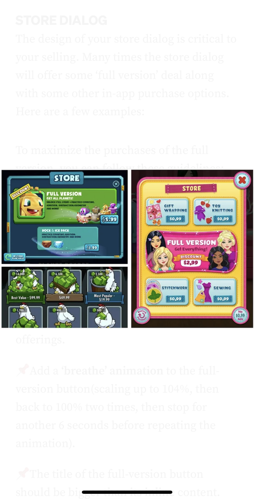

The article on best practices for game design UX by Amir Dori is an insightful dive into the design thinking and mechanics in mobile games, which confirmed a lot of what I saw as a user of such games. Having been involved in UI/UX in game development, I found the explanations for each practice very clear for designers and developers to follow. The suggestions on dialogs got me thinking about those that I encountered in mobile games, such as the user interaction with the “X” button. The automatic response to closing anything that has a clear exit out functionality even occurred while I read the article on my phone: I accidentally clicked on one of the images (which had an “X” button on the top right) and then immediately tapped on the supposed icon to close the image dialog. It was a very meta moment and proved just how useful the application of these practices are for user engagement.

screenshot of the image dialog with the "X" button
04
Visual Thinking Analysis
This image is interesting because it encapsulates a lot of different elements of the beach landscape that can be seen. It is achieved by the use of composition with leading lines and diagonals that draw the viewer into middle right part of the image. The moody reddish filter of the image adds to the contrast between foreground and background. Something that cannot be known by looking at it alone is that the original photo was taken with a soft blur effect to mimic the look of a traditional painting.
The image relates to the topic of my collection (Ocean Beach photography) because it is a photo taken at one of my trips to Ocean Beach. The perspective and location of the shot shows the Cliff House, Seal Rocks, and numerous beach goers off in the distance.
My collection of Ocean Beach photos tells the story of all the different times I would watch the sun set into the water or take walks along the shoreline with my camera. This became a very special place for me during the pandemic, since Ocean Beach and the adjacent Great Highway was very open for people who wanted to get outside for a breath of fresh air.
Erica Ng, 2023
This image is about American urban architecture. The most interesting aspects of the image is the use of composition techniques such as diagonals and repetition. There are a lot of lines in the image, from the shape of the buildings to their abundance of windows. All the buildings layered on one another fill the image as well. I found the color palette (shades of blue, green, gray, brown and beige) looked very nice together.
The most obvious aspects are that it is taken in a residential neighborhood, the amount of windows, balconies, and rooftops, along with the general style of architecture leads me to believe that the buildings are various apartments. The most mysterious aspect, to me, is the tree that is in the middle of the image — I did not notice it all until I started zooming in — and I wondered what kind of story it could have among the “urban forest” that makes up the rest of the image. The placement of the tree in the image seems very intentional in that regard.
Dilara Sarigoz, 2023
03
Visual Thinking Strategies Research
From the Awwwards Site of the Day, Giulia Gartner’s website designed and developed by Thomas Bosc exemplifies unique image and interaction techniques that were very inspiring to see. It instantly reminded me of the project examples we looked at in class, especially the photo previews scroll and the heading scroll interactions. They used a mixture of images revealing and hiding text content. There were also a lot of cool animations and image effects used. My favorite aspect of the website is how it looks like the video of Giulia seems to follow the user: in the example video, when the cursor is moved to the button that changes light/dark mode, Giulia looks up towards the button as if she sees your interaction. On the actual website, the video just plays through and loops, so I am sure it was just good timing. However, it made me think that if I had just glanced at it quickly, I would have never noticed this small detail, so I think it makes a huge difference on how website design regards the user. The article on visual thinking skills made me see more critically about what is happening in the images/videos as it relates to the rest of the page.
02
Overlays Design Pattern Research
The article on best practices for overlay windows by Naema Baskanderi addresses an interesting pattern in UI/UX design: the window within a window. Having been mostly on the receiving end of such UI patterns, and recently on the design side, it was surprising to see that I did not know how to label this particular one. From my own user experience, I would refer to these smaller window elements as popup windows. According to the article, this seems to be an outdated term meant for the "dreaded" window that would pop up, which I am guessing is akin to old school error messages or any of those insistent popup ads. The use of 'overlays' for this design pattern sounds vaguely familiar, and makes the most sense, because visually speaking it is placed on top of the main window. However, 'modals' and 'dialogs' are entirely new vocabulary for me. Modals took me longer to grasp, but the operative word being mode is telling of its function that "creates a mode that disables the main window but keeps it visible." The one that really confused me was dialogs—it is apparently associated with retrieving user input. I am not sure if it is just technical designer language, but all these different names for this one UI pattern was kind of confusing. At times, I could not tell what exactly a term being used was alluding to, but otherwise reading about the topic was understandable and I got the general idea of the do's and don'ts when it comes to using it.
01
Form Design Research
The article on best practices for form design by Salim Ansari relays the value in improving usability of forms. The goal of designing a form is to ensure that filling out the form feels less like a chore for the user—it should be a straightforward, simple, and easy process. Some of the tips discussed include the need for transparency and understanding expectations of users. As a web user who has filled out many forms, I often feel productive if I can see my progress. Being able to know that I am at the halfway point or only a few steps away from completion allows me to see it as the form guiding me, instead of making me go "oh, there's more" and feeling overwhelmed. Ansari also notes the user preference for tab key navigation, increasing the workflow of moving between input fields. Thus, designing the form to accommodate this common pattern in online forms is to be expected.
Many examples of these features in forms lead them to having better design practice and usability. One website that exemplifies this is the 16Personalities test form, which consists of ten pages of input fields. The percentage bar that increases with each page completed lets users know how far along the test they are, which is helpful for getting through long and tedious forms. The form also includes auto scrolling to the next input field after the user completes the previous one, given the input type is not very usable with the tab key shortcut.